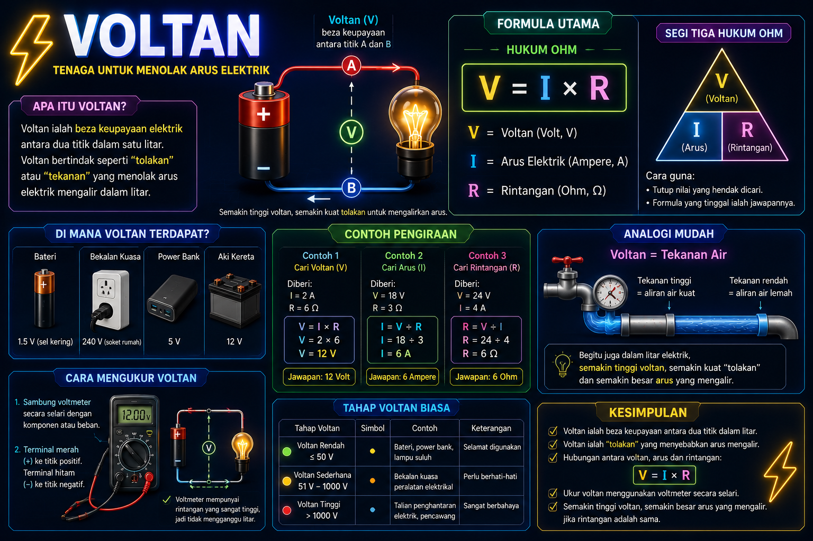
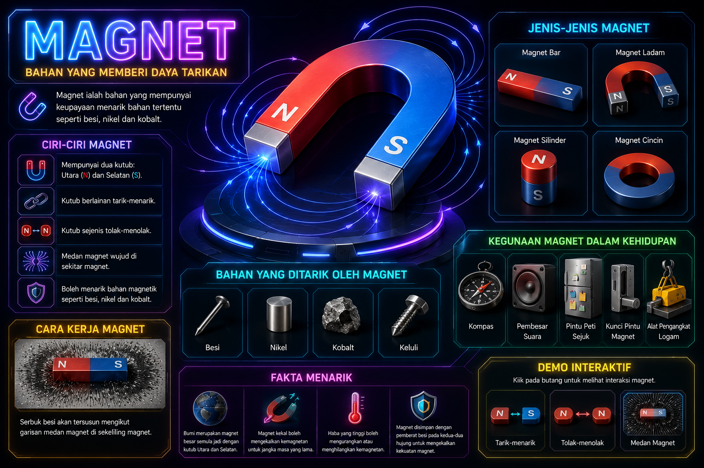

GALERI NOTA INTERAKTIF
Ketik atau klik pada mana-mana kad topik di bawah untuk memaparkan infografik HD penuh secara interaktif. Anda juga boleh mendengar narasi bagi setiap topik.

Tenaga Elektrik
Keupayaan arus elektrik untuk melakukan kerja apabila mengalir melalui litar elektrik.

Tenaga Mekanikal
Tenaga yang dimiliki oleh sesuatu objek disebabkan oleh pergerakan atau kedudukannya.

Arus Elektrik
Kadar kadar pengaliran cas elektrik (elektron) yang melalui satu konduktor dalam litar.

Voltan
Beza keupayaan elektrik yang menolak elektron mengalir dalam suatu litar elektrik.

Magnet
Bahan yang mempunyai keupayaan unik untuk menarik bahan magnetik tertentu seperti besi dan nikel.

Medan Magnet
Ruang di sekeliling bahan magnet di mana daya tarikan atau tolakan magnet boleh dikesan.